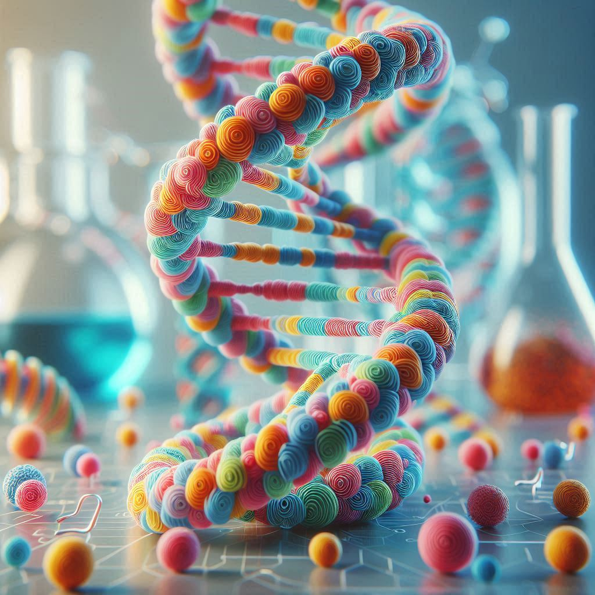
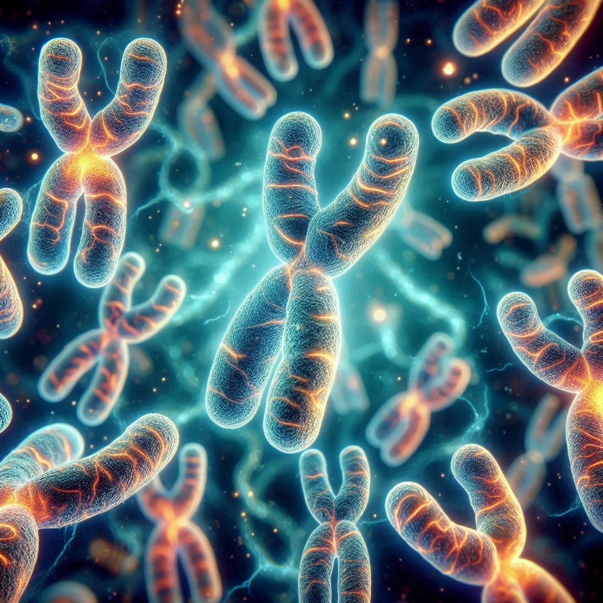
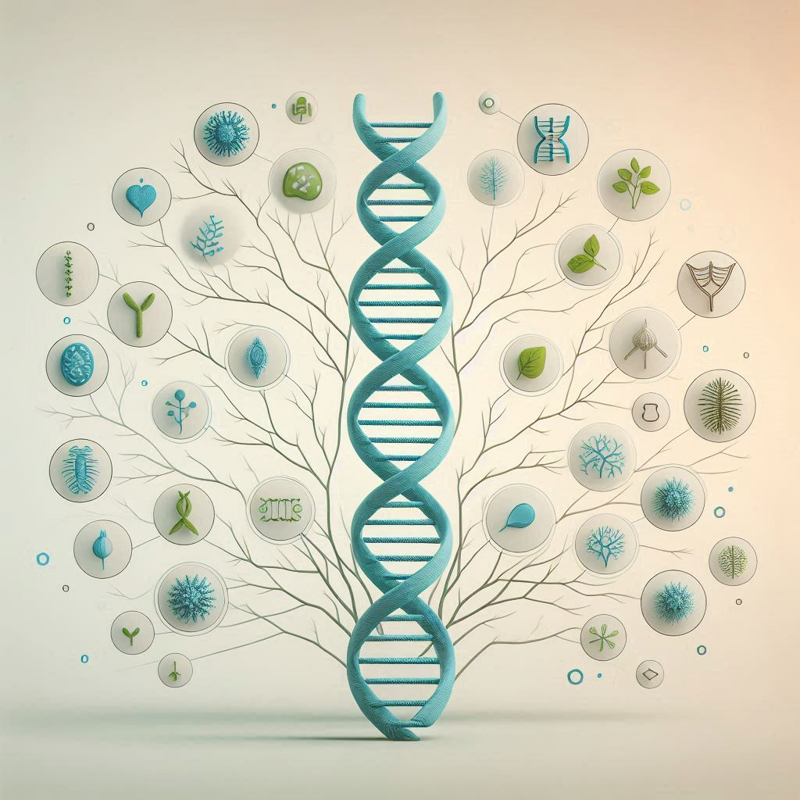
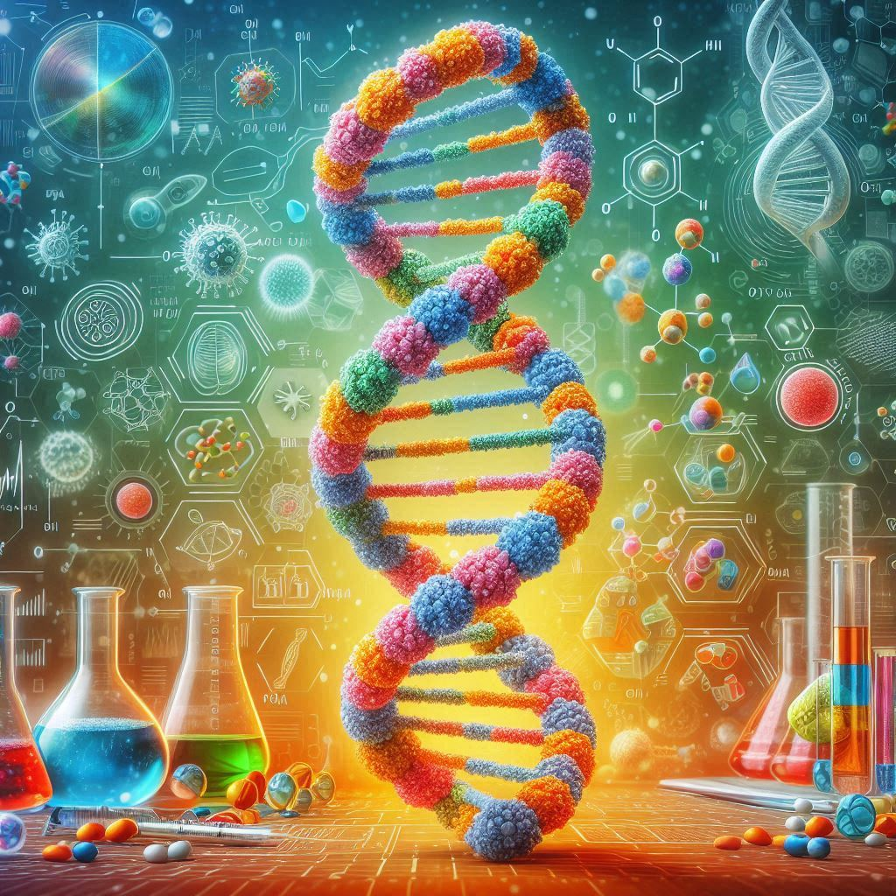
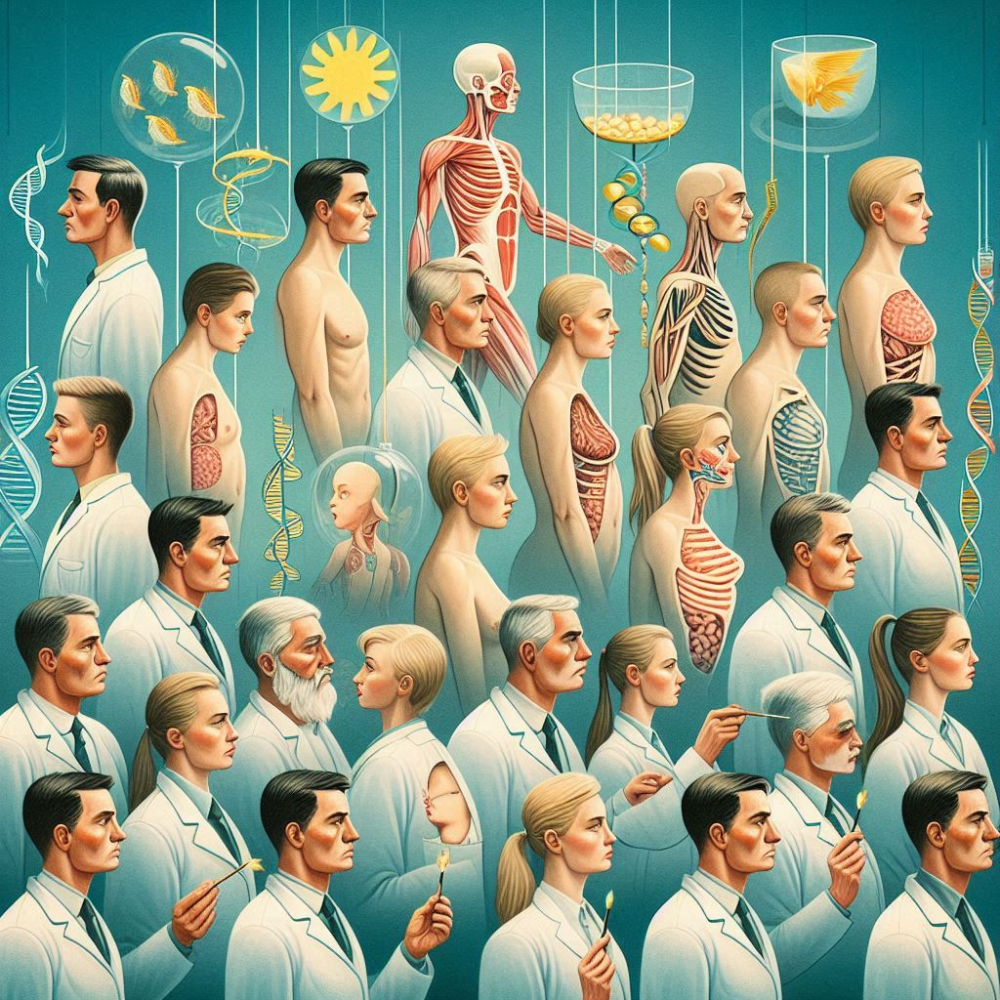

Генетика – це наука про те, як передаються ознаки від батьків до дітей. Від кольору очей до здатності згортати язик – усе це визначається генами!

ДНК — це головний носій спадкової інформації, що визначає фізичні та генетичні характеристики. Її структура дозволяє передавати ознаки від покоління до покоління.


Домінантні гени проявляються навіть за наявності однієї копії, тоді як рецесивні — лише за відсутності домінантних. Цей процес визначає, як формуються спадкові ознаки, такі як колір очей чи тип волосся.


Дезоксирибонуклеїнова кислота (ДНК) є основним носієм генетичної інформації в живих організмах. Вона складається з двох ланцюгів, з'єднаних у форму подвійної спіралі, де послідовність нуклеотидів кодує всі біологічні функції та характеристики організму.
Домінантні гени проявляються навіть за наявності однієї копії та визначають такі ознаки, як коричневий колір очей. Рецесивні гени активуються лише за наявності двох копій, наприклад, блакитного кольору очей.
Еволюція — це процес поступових змін у популяціях організмів протягом тривалого часу, завдяки чому виникають нові види. Вона базується на мутаціях, природному доборі та переданні адаптивних ознак.
Хромосоми — це структури в ядрі клітини, що містять ДНК. У людини їх 46, поділених на 23 пари, що є нормальною кількістю для здорового організму. Вони зберігають і передають генетичну інформацію, необхідну для функціонування та розвитку організму.